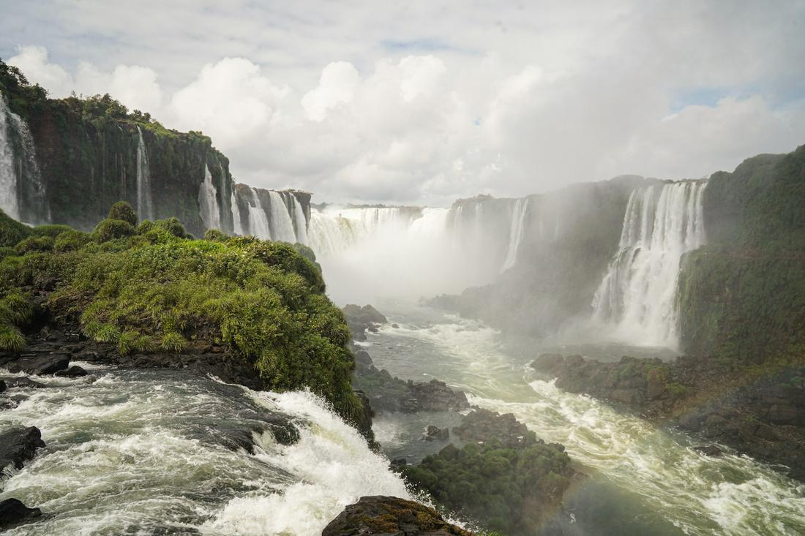
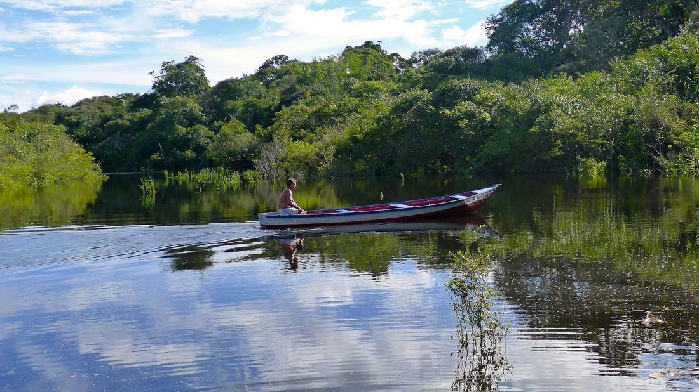

Samba rhythms, thundering waterfalls, and beaches that live up to the postcards.
Brazil is a country I never oversell, because it is genuinely impossible to oversell. It is the largest country in South America, home to one of the most photographed landmarks on the planet in Christ the Redeemer, one of the loudest natural wonders on earth at Iguazu Falls, and a slice of the Amazon rainforest so vast it is honestly hard to describe until you are standing in the middle of it. This is a destination built for big, memorable moments.
What I love arranging for clients is a trip that strings a few of those moments together instead of picking just one. Rio brings the energy, the beaches, and those unmistakable views from Corcovado and Sugarloaf Mountain. Iguazu delivers raw natural power on a scale that photos genuinely do not capture. And the Amazon, reached through the river city of Manaus, slows everything down into something quieter and more immersive. Direct flights from Florida make Brazil more reachable than people expect for how far it feels.
Here are three excursions I love arranging for clients heading to Brazil.

This is the day that defines most people's mental image of Brazil, and I build it to hit every iconic view the city is famous for. We start with the cog train ride up Corcovado Mountain to stand at the feet of Christ the Redeemer, looking out over the entire city, the bay, and the beaches spread out below like a map. From there, I book the glass cable car up Sugarloaf Mountain, ideally timed for late afternoon so guests catch the sunset from the second peak with Rio's lights beginning to switch on beneath them. No Rio day is complete without time on the sand, so we work in a walk along Copacabana's iconic wave-pattern mosaic promenade and a caipirinha at golden hour in Ipanema, where the sunset over the ocean draws a crowd every single evening. For guests who want a slower, more artistic afternoon, I love adding a ride on the old wooden tram through Santa Teresa, Rio's hillside bohemian neighborhood, followed by a stop at the dazzling tiled Selarón Steps, one of the most photographed staircases in South America. It is a full day, but it is the one that makes people say Rio looked exactly like they hoped it would.

Photos genuinely do not do Iguazu Falls justice, and I tell every client this before they go, because the scale and sound of nearly two hundred individual waterfalls crashing down together has to be experienced in person. I build the day around the Brazilian side first, where the panoramic walkways give you sweeping, wide-angle views of the entire falls system, including the thunderous horseshoe-shaped Devil's Throat, where the water disappears into a cloud of mist and rainbows form almost constantly in the spray. For guests who want to feel the falls rather than just see them, I book the Macuco Safari boat ride, which takes you directly beneath one of the cascades until everyone on board is completely soaked and laughing about it. A stop at Parque das Aves, a bird sanctuary right at the park's entrance, is one of my favorite additions, since it puts you face to face with toucans and macaws in walk-through aviaries. For travelers with an extra day, crossing the border into Argentina opens up an entirely different set of catwalks that bring you right up to the edge of the falls from above. This is raw nature at full volume, and it belongs on every serious Brazil itinerary.

For clients who want to see a genuinely different side of Brazil, I add on a few nights near Manaus, the river city that serves as the main gateway into the Brazilian Amazon. The must-see moment here is the Meeting of the Waters, where the dark, tannin-stained Rio Negro and the pale, sediment-rich Amazon River run side by side for miles without fully mixing, a phenomenon you can see clearly from a boat. From Manaus, I book a stay at a rainforest lodge accessible only by river, where the days are built around wildlife: gliding through flooded forest channels in search of rare pink river dolphins, walking a treetop canopy trail for a completely different vantage point on the jungle, and fishing for piranha the traditional way, from a wooden canoe. Evenings often include a nighttime caiman-spotting excursion by flashlight along the riverbank, and many lodges arrange a visit to a riverside community to learn how families here have lived alongside the river for generations. It is a quieter, slower kind of adventure than Rio or Iguazu, and I find it is exactly the contrast that makes a longer Brazil itinerary feel complete.
Prefer to plan together? I'll build your custom package. Already know what you want? Book instantly through my travel portal.